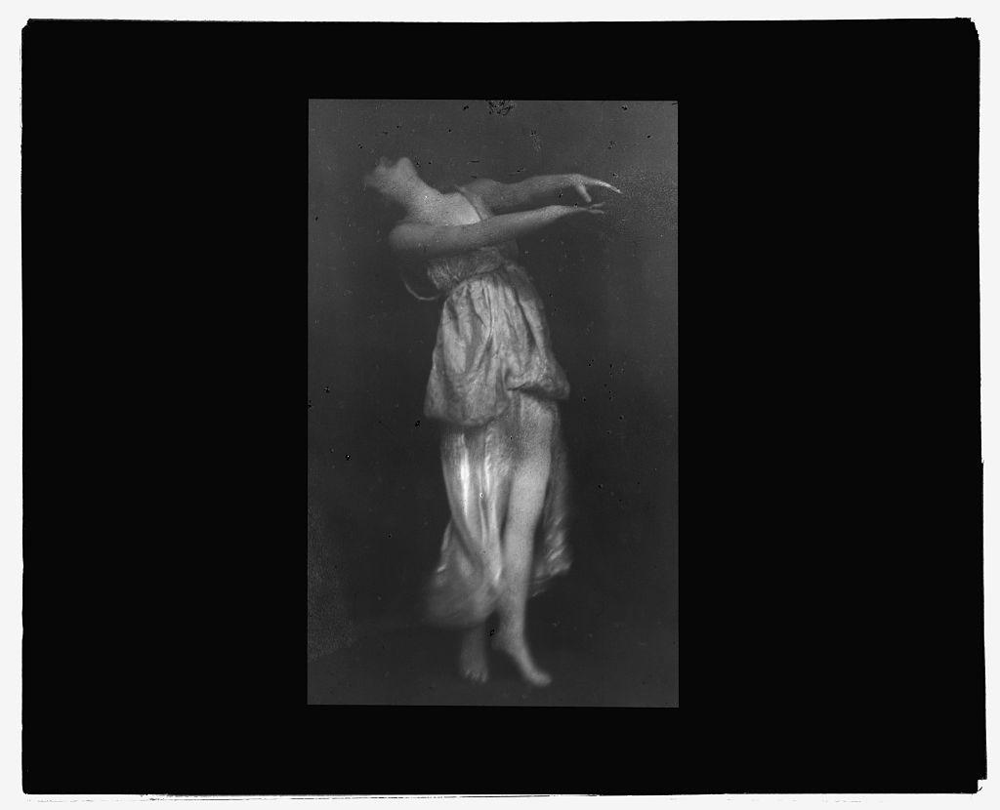
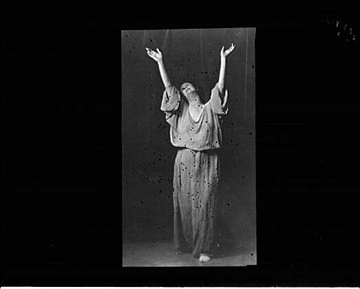
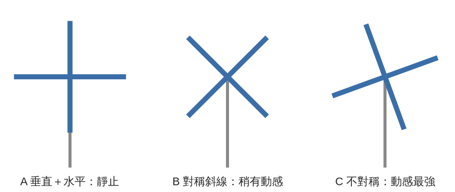

一張靜止的照片或一幅畫，為什麼會讓人覺得裡面的東西「正要動」？Arnheim 主張，答案藏在偏離垂直與水平的程度裡：越是斜、越是偏離常態，畫面裡的「方向張力」就越強。今天學會看出一個身體或一個畫面「往哪裡用力」，並用斜線、變形和姿勢改變這股力。
史料 攝影師 Arnold Genthe（1869–1942）在 1915 到 1923 年間，替現代舞先驅 Isadora Duncan 拍過一系列照片，底片今天收藏在美國國會圖書館的 Genthe 典藏中。館方目錄還註記，本課圖 3 的一張相近影像，後來印在 Genthe 1936 年出版的自傳《As I Remember》第 185 頁對面。
舞蹈靠時間存在，照片只能留下一個瞬間。可是看圖 1，Duncan 的頭向左後方仰，雙臂卻往右前方平伸出去，從腳尖到頭頂，整個身體彎成一道弧，看起來像正要轉身，或正要往後倒（見圖 1）。快門只開了一下下，畫面上沒有任何東西在動。那股「正要動」的感覺，是從哪裡來的？上一堂我們談 Arnheim 的「平衡」，他在同一本書裡用了一整章回答這個問題。

圖 1｜Isadora Duncan 頭向後仰、雙臂前伸，身體彎成弧線，主軸偏離垂直。來源：Arnold Genthe，〈Isadora Duncan dancing〉，底片攝於 1915–1923 年間，美國國會圖書館 Genthe 典藏。授權：Public domain（攝影者卒於 1942 年；館方標示 No known restrictions on publication），來源頁面
經典理論 Rudolf Arnheim 在《Art and Visual Perception: A Psychology of the Creative Eye》（University of California Press，1954 年初版，1974 年新版）第一章就先下了一個判斷：視覺經驗是動態的。他寫道，我們看到的首先是 “an interplay of directed tensions”：一組有方向的張力在互相作用。他主張這些張力屬於知覺本身，和大小、形狀、顏色一樣，並不是觀者憑記憶加上去的；因為有大小也有方向，所以可以稱為心理上的「力」。到了第九章〈Dynamics〉，他借用 Kandinsky 在《點、線到面》裡的說法，建議少用「運動」這個詞，改說「張力」，再加上方向（見圖 2）。
圖 2｜Arnheim 對方向張力來源的說明：張力來自對垂直／水平框架或原本形態的偏離。來源：本課程依 Arnheim《Art and Visual Perception》（1974 年版）第九章〈Dynamics〉繪製。授權：本課程自製圖解。
經典理論 張力從哪裡來？Arnheim 列了幾條路：
經典理論 方向還有左右之分。Arnheim 在第一章轉述藝術史家 Heinrich Wölfflin 的觀察：畫是「由左往右讀」的，所以從左下到右上的斜線看起來是上升，另一條是下降；把畫左右翻轉，意義就變了（第 33–34 頁）。這是 Wölfflin 的主張；Arnheim 另外引了一些知覺觀察來支持，但主要依據仍是藝術史家的經驗。
實證研究 Arnheim 寫書時承認，這些「力」在神經系統裡還找不到直接的對應（第 419 頁）。後來的研究從另一個角度切入：靜止的畫面能不能讓大腦處理「動」？Zoe Kourtzi 與 Nancy Kanwisher 在 2000 年（Journal of Cognitive Neuroscience 12 卷 1 期）用 fMRI 比較兩種照片：運動員正在動作中的照片，和同一類人靜止休息的照片。負責分析視覺運動的腦區 MT/MST，看到「暗示運動」的照片時活化較強。
實證研究 這個結果有爭議。James Alford 等人 2007 年（Cognitive, Affective, & Behavioral Neuroscience 7 卷 3 期）用經顱磁刺激干擾受試者的 MT/MST，受試者判斷照片是否暗示運動的表現並沒有變差。作者的結論是，在影像出現後 150 毫秒內，MT/MST 並不直接參與這項判斷；fMRI 看到的活化可能是其他腦區由上而下的影響。同一篇論文也整理了 Jennifer Freyd 1983 年的研究：看過一張動作凝結的照片後，人們傾向把畫面記成「再晚一點」的時刻，這種現象後來稱為「表徵動量」。（Freyd 的部分依二手文獻：Alford et al. 2007 的文獻回顧）
實證研究 由左往右這一條，Sylvie Chokron 與 Maryse De Agostini 在 2000 年（Cognitive Brain Research 10 卷）做了檢驗。他們讓 162 位受試者看成對的圖片，一張是另一張的左右鏡像，請他們選較喜歡的一張。一半是由左往右閱讀的法國人，一半是由右往左閱讀的以色列人。法國受試者偏好方向朝右的圖，以色列受試者偏好方向朝左的圖。方向感受會受閱讀習慣影響，並不是每個人都一樣。（依 PubMed 摘要）
經典理論 Arnheim 在第八章〈Movement〉有一節叫〈The Body as Instrument〉（第 403–405 頁）。他說舞者有血有肉，有體重也有感覺，但對觀眾來說，舞者只等於「看得見的部分」。他舉了一個例子：Kandinsky 曾把舞者 Palucca 的一張照片簡化成幾何圖形。Arnheim 認為，那張圖保留了身體的對稱和比例，卻失去了照片的動感；照片的動感有一部分來自我們對身體的了解，例如雙腿沒有平放、手臂向兩側撐開，整個人看起來是被推離地面。
經典理論 他還提到一個舞台上常見的現象：在一段奔跑中突然停下的舞者，看起來是「被止住」，不像在休息（第 382–383 頁）。四周都在動的時候，靜止會被看成一股抵抗的力量，像急流中的一塊石頭。
本課程分析 把 Genthe 拍的兩張照片放在一起看（見圖 1、圖 3）。

圖 3｜Isadora Duncan 雙臂高舉，軀幹接近垂直。來源：Arnold Genthe，〈Isadora Duncan dancing〉，底片攝於 1916–1918 年間，美國國會圖書館 Genthe 典藏。授權：Public domain（攝影者卒於 1942 年；館方標示 No known restrictions on publication），來源頁面
本課程分析 這套看法搬到日常，捷運月台就很好用。等車的人大多直直站著，畫面很靜；聽到關門提示音時，有人身體前傾、一腳跨出去，那一個斜角就是整個月台最「有方向」的地方。你不用看到他跑，只看那個傾斜，就知道他要往哪裡去。
經典理論 Arnheim 在〈Dynamics〉章用荷蘭風車說明同一件事（見圖 4）。風車葉片畫成一橫一豎時，風車是靜止的；轉成對稱的 X 字形，動感多一點；停在不對稱、不平衡的角度時，動感最強。三種角度其實都可能是風車轉動中的某一刻，差別只在畫面怎麼停。

圖 4｜風車葉片的三種角度：A 垂直＋水平，B 對稱斜線，C 不對稱斜角。示意，非實測數據。來源：本課程依 Arnheim《Art and Visual Perception》（1974 年版）第九章 Figure 267 的說明繪製。授權：本課程自製圖解。
史料（依 Arnheim 書中記述） Arnheim 說，1920 年代中期荷蘭風格派（De Stijl）的領導者 Theo van Doesburg 推翻了 Piet Mondrian 只准用垂直與水平的教條。Van Doesburg 主張，現代精神需要和建築、森林、風景裡無所不在的直角框架形成強烈對比，而對比的方法就是斜線。他這時期的作品以「反構成」（Counter-Composition）為名。芝加哥藝術學院收藏的〈Counter-Composition VIII〉（1924 年）是其中一件，館方未標示為公有領域，本課程不放圖，請到典藏頁面自行觀看。看的時候把畫框當成「垂直與水平的基本框架」，找出畫中線條和畫框邊緣之間的角度，再和圖 4 的風車對照：哪一種角度讓畫面最不安定？
誤解一：斜線越多，畫面越有動感。Arnheim 在〈Dynamic Composition〉一節提醒，每個局部各自很有動感，放在一起卻可能互相抵銷，變成一團卡住的力。局部的方向必須接上整體的主要方向。舞台上十個舞者各自往不同方向傾斜，常常比全體朝同一個斜角更亂。
誤解二：張力完全是我們「腦補」出來的。Arnheim 主張張力是知覺本身的性質，條件要在對象身上找。但他也承認，對常態的知識會加強張力，例如舉手的人比樹更緊繃。兩邊都有，比例多少，他沒有給出量化答案。
誤解三：腦部掃描已經證明了 Arnheim 的「力」。Kourtzi 與 Kanwisher 2000 年測的是「暗示運動」的照片，並沒有測 Arnheim 說的斜線或變形；Alford 等人 2007 年的實驗還顯示 MT/MST 未必是必要的。Arnheim 的知覺之「力」到現在仍是理論與比喻。
誤解四：由左下往右上一定是「上升」。這是 Wölfflin 依西方閱讀習慣提出的觀察。Chokron 與 De Agostini 2000 年的研究顯示，方向偏好會隨閱讀方向改變。台灣讀者橫排、直排都讀，這條規則對我們是否同樣成立，目前沒有查到直接的研究。
看（5 分鐘） 在通勤路上、騎樓或超市排隊時，觀察身邊的人。找出三個「身體主軸偏離垂直」的人：正在彎腰撿東西、趕路前傾、靠在柱子上。每看到一個，在心裡回答：他的力往哪個方向？是因為斜，還是因為手臂或腿離開了常態位置？
做（10 分鐘）
回顧（5 分鐘）
來源 | 類型 | 查核日期 |
Arnheim, R. Art and Visual Perception: A Psychology of the Creative Eye. University of California Press, 1954；新版 1974。本課程查閱 1974 年版全文（第一章 Balance、第八章 Movement、第九章 Dynamics）：Internet Archive；出版資訊：UC Press 書目頁 | 經典理論 | 2026-11-08 |
Kourtzi, Z., & Kanwisher, N. (2000). Activation in human MT/MST by static images with implied motion. Journal of Cognitive Neuroscience, 12(1), 48–55. DOI（摘要以 Crossref 查核） | 實證研究（依摘要） | 2026-11-08 |
Alford, J. L., van Donkelaar, P., Dassonville, P., & Marrocco, R. T. (2007). Transcranial magnetic stimulation over MT/MST fails to impair judgments of implied motion. Cognitive, Affective, & Behavioral Neuroscience, 7(3), 225–232. 全文 PDF | 實證研究；並作為 Freyd 1983 的二手文獻 | 2026-11-08 |
Freyd, J. J. (1983). The mental representation of movement when static stimuli are viewed. Perception & Psychophysics, 33(6), 575–581. DOI（書目以 Crossref 查核） | 實證研究（依二手文獻） | 2026-11-08 |
Chokron, S., & De Agostini, M. (2000). Reading habits influence aesthetic preference. Cognitive Brain Research, 10(1–2), 45–49. PubMed 摘要 | 實證研究（依摘要） | 2026-11-08 |
Genthe, A. As I Remember. New York: Reynal & Hitchcock, 1936. Open Library 書目 | 史料（書目） | 2026-11-08 |
Theo van Doesburg，〈Counter-Composition VIII〉，1924，芝加哥藝術學院。典藏頁（館方未標示公有領域，故不放圖） | 史料（作品資訊） | 2026-11-08 |
圖 1：Library of Congress，Genthe photograph collection，〈Isadora Duncan dancing〉，LC-G432-0958。典藏頁（No known restrictions on publication；攝影者卒於 1942 年） | 圖片授權 | 2026-11-08 |
圖 3：Library of Congress，Genthe photograph collection，〈Isadora Duncan dancing〉，LC-G432-1476。典藏頁（No known restrictions on publication；攝影者卒於 1942 年） | 圖片授權 | 2026-11-08 |
圖 2、圖 4：本課程依 Arnheim（1974）以 QuickChart 繪製 | 自製圖解 | 2026-11-08 |
延伸閱讀：Arnheim 原書第九章〈Dynamics〉的風車與 Van Doesburg 段落；下一堂（第 013 堂）談 Yarbus 的眼動研究，看眼睛實際上怎麼在畫面裡走。